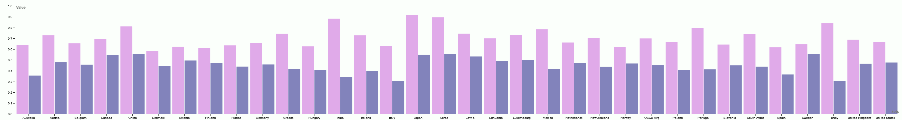
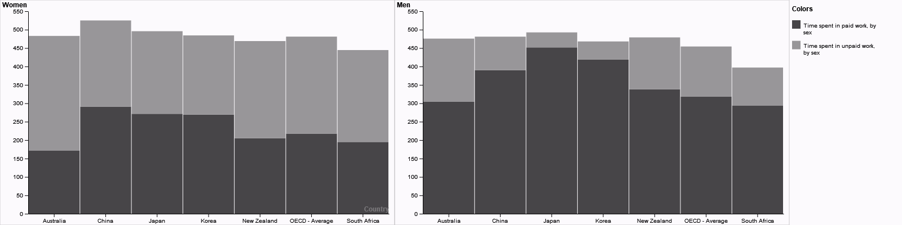

Women Across all OECD Countries Spend More Time in Unpaid Work than Men...
Time spent on unpaid work by gender, in minutes per day, January 2022
Men = pink, Women = purple
Women spend more time in both total work and unpaid work, even in countries with high levels of education
Time spent working in paid and unpaid work by gender, in minutes per day, January 2022
Source: OECD